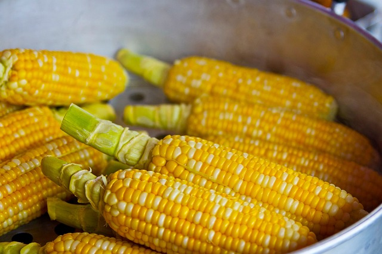
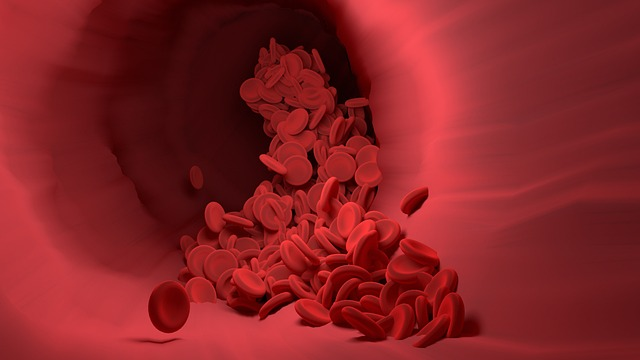

Julio de 2023
la FDA de los EE. UU. aprobó el primer cultivo transgénico resistente a la sequía, llamado DroughtGard. Este cultivo fue desarrollado por la empresa estadounidense DroughtGard Seeds y es una variedad de maíz que ha sido modificada genéticamente para ser más resistente a la sequía.
Mayo de 2023,
la FDA de los EE. UU. aprobó el primer medicamento basado en CRISPR para el tratamiento de la enfermedad de la sangre, llamado Luxturna. Este medicamento fue desarrollado por la empresa estadounidense Spark Therapeutics y es una terapia génica que se utiliza para tratar la amaurosis congénita de Leber, una enfermedad genética que causa ceguera.
julio de 2023

la empresa estadounidense Ginkgo Bioworks anunció que había desarrollado un nuevo tipo de bacteria que puede degradar el plástico. Esta bacteria fue desarrollada utilizando la tecnología CRISPR-Cas9 y es capaz de degradar el polietileno, un tipo de plástico común.